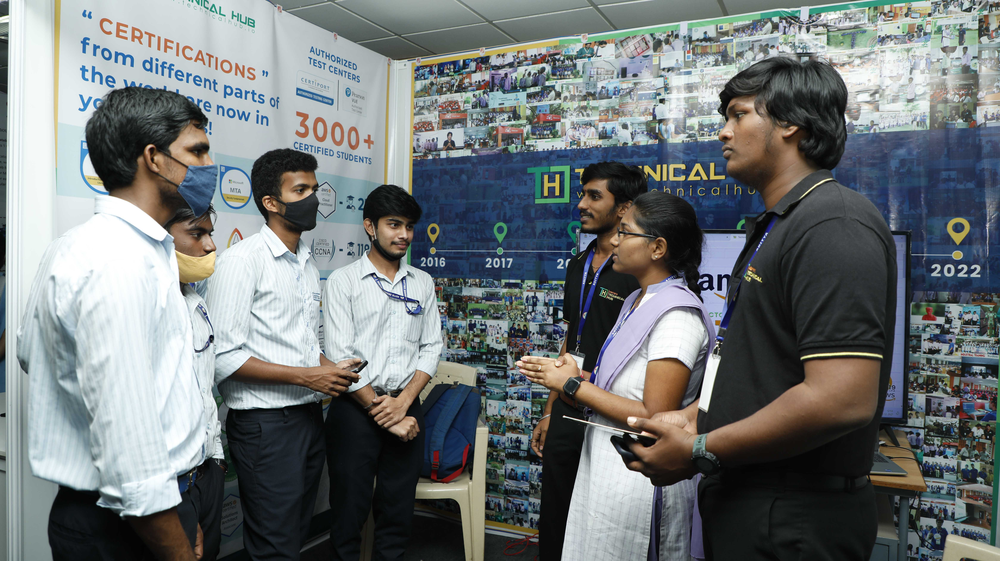

T-Connect is an event that gives freshmen a chance to connect with various emerging technologies. Individuals who choose to attend the program are given the opportunity to explore and experience various emerging technologies like cloud computing, networking, coding, artificial intelligence, augmented reality, virtual reality and robotics.They are briefed about the importance of the technology and the opportunities they bring and are allowed to eventually choose a career path that best suits them.

T-CONNECT
T-Connect is an event that gives freshmen a chance to connect with various emerging technologies. Individuals who choose to attend the program are given the opportunity to explore and experience various emerging technologies like cloud computing, networking, coding, artificial intelligence, augmented reality, virtual reality and robotics.They are briefed about the importance of the technology and the opportunities they bring and are allowed to eventually choose a career path that best suits them.